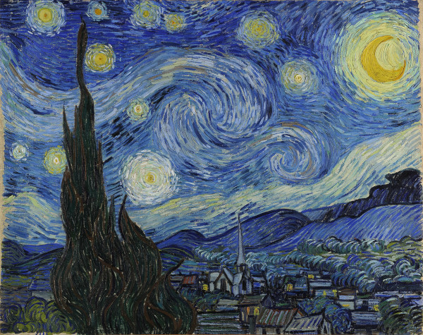
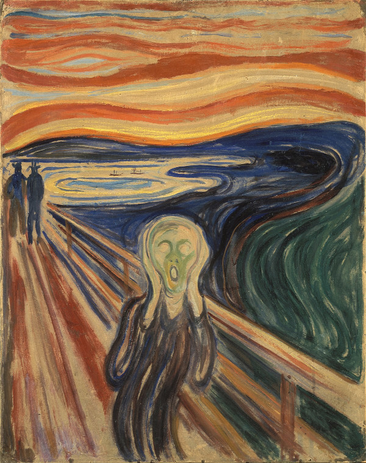
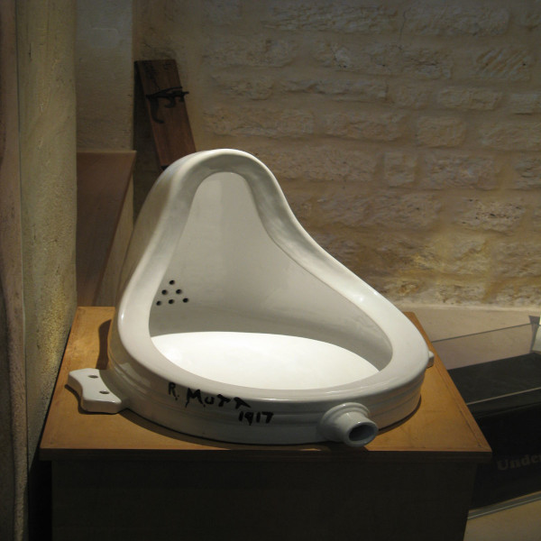
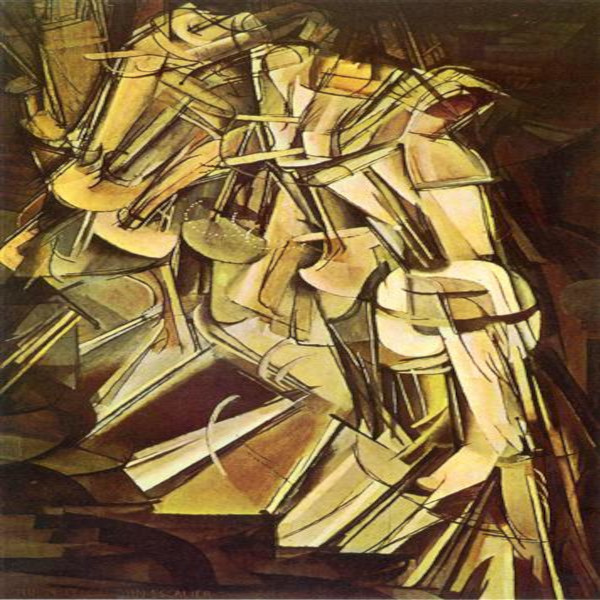
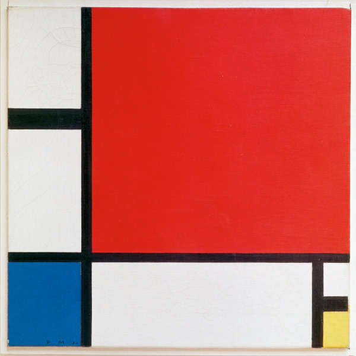
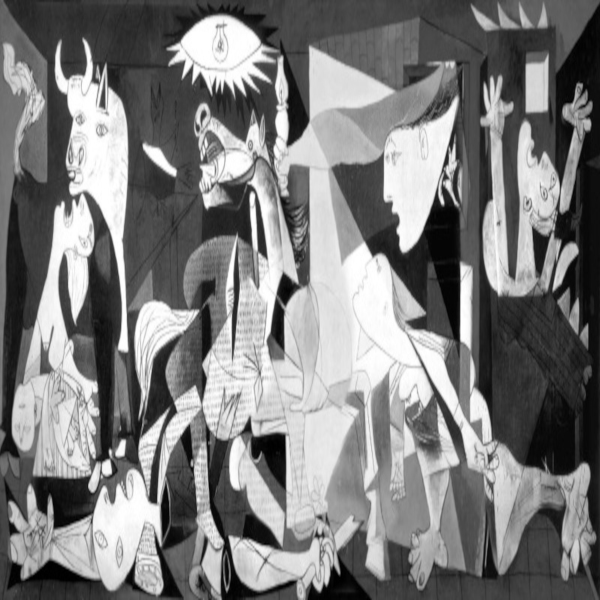
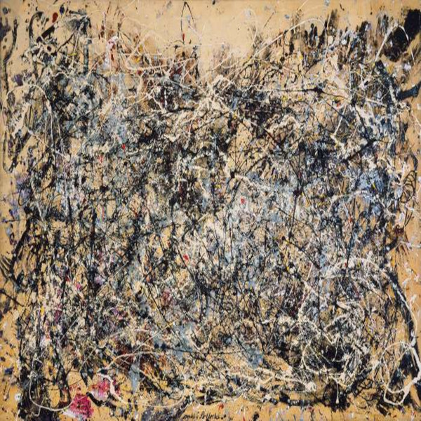
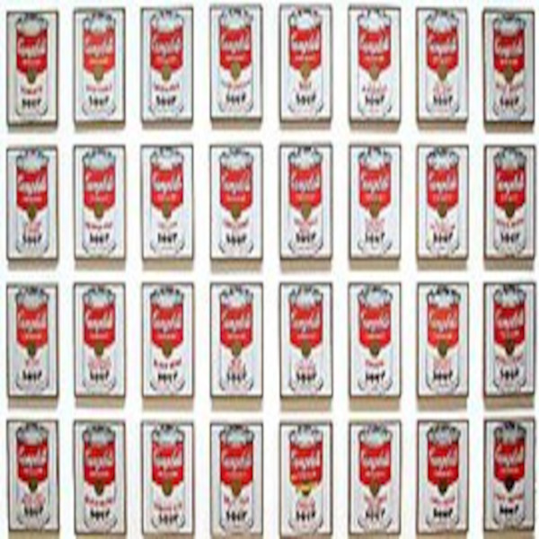

A arte moderna abrange um período amplo e diversificado, com inúmeras obras de destaque que foram consideradas marcos importantes para o desenvolvimento da arte. Aqui estão algumas das principais obras da arte moderna:

Les Demoiselles d'Avignon (1907) - Pablo Picasso
Uma pintura revolucionária que marcou o início do cubismo, retratando cinco figuras femininas de forma geométrica e distorcida.
A Noite Estrelada (1889) - Vincent van Gogh
Uma das obras mais famosas de Van Gogh, que retrata um céu noturno estrelado com formas onduladas e intensas cores.
O Grito (1893) - Edvard Munch
Uma icônica pintura expressionista que representa um rosto distorcido em um momento de angústia e desespero.
A Fonte (1917) - Marcel Duchamp
Uma das obras mais influentes da arte conceitual, onde Duchamp apresentou um urinol com o pseudônimo "R. Mutt".
Nú Descendo a Escada No. 2 (1912) - Marcel Duchamp
Essa obra cubista mostra uma figura humana em movimento, capturada em um estilo abstrato.
Composição em Vermelho, Azul e Amarelo (1930) - Piet Mondrian
Representante do movimento De Stijl, Mondrian criou uma obra abstrata com formas geométricas e cores primárias.
Guernica (1937) - Pablo Picasso
Uma das mais poderosas obras anti-guerra, Guernica retrata o bombardeio da cidade basca de Guernica durante a Guerra Civil Espanhola.
Número 1A (1948) - Jackson Pollock
Uma famosa pintura "drip" (gotejamento) que representa a técnica de Pollock de jogar tinta sobre uma tela colocada no chão.
Campbell's Soup Cans (1961) - Andy Warhol
Uma série de 32 pinturas, cada uma representando uma lata de sopa Campbell, que se tornou um ícone da arte pop.
O Gabinete do Dr. Caligari (1920) - Walter Reimann e Hermann Warm
Um marco no cinema expressionista alemão, conhecido por seus cenários distorcidos e atmosfera sombria.
Ballet Mécanique (1924) - Fernand Léger
Um filme experimental que apresenta imagens abstratas e formas geométricas em movimento, acompanhadas por uma trilha sonora futurista.
Essas obras são apenas algumas das muitas criações que tiveram um impacto significativo na arte moderna. Cada uma delas reflete as diferentes correntes artísticas e o espírito inovador do movimento moderno, que abriu caminho para uma ampla diversidade de estilos e abordagens na arte contemporânea.